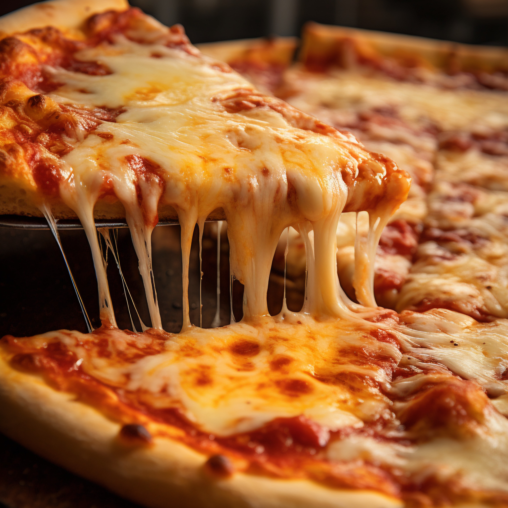

Salade César 🥗
Laitue croquante, poulet grillé, croûtons dorés, parmesan et sauce onctueuse pour un mélange frais et savoureux.

Pizza Margherita 🍕
Pâte fine, sauce tomate maison, mozzarella fondante et basilic frais pour une recette simple et authentique.

Tartiflette 🥔
La tartiflette est un plat savoyard convivial à base de pommes de terre, lardons, oignons et reblochon fondu.

Bolognaise 🍝
Pâtes al dente nappées d'une sauce mijotée à la viande, tomates et aromates pour un classique savoureux.